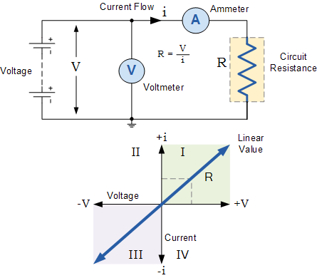
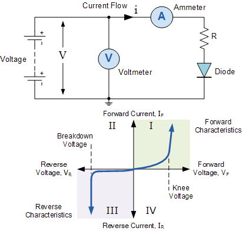

The I-V Characteristic Curves, which is short for Current-Voltage Characteristic Curves or simply I-V curves of an electrical device or component, are a set of graphical curves which are used to define its operation within an electrical circuit. As its name suggests, I-V characteristic curves show the relationship between the current flowing through an electronic device and the applied voltage across its terminals.
I-V characteristic curves are generally used as a tool to determine and understand the basic parameters of a component or device and which can also be used to mathematically model its behaviour within an Electronic Circuit. But as with most electronic devices, there are an infinite number of I-V characteristic curves representing the various inputs or parameters and as such we can display a family or group of curves on the same graph to represent the various values.
For example, the “current-voltage characteristics” of a bipolar transistor can be shown with various amounts of base drive or the I-V characteristic curves of a diode operating in both its forward and reverse regions.
But the static current–voltage characteristics of a component or device need not be a straight line. Take for example the characteristics of a fixed value resistor, we would expect them to be reasonably straight and constant within certain ranges of current, voltage and power as it is a linear or ohmic device.
There are however, other resistive elements such as LDR’s, thermistors, varistor’s, and even the light bulb, whose I-V characteristic curves are not straight or linear lines but instead are curved or shaped and are therefore called non-linear devices because their resistances are non-linear resistances.
If the electrical supply voltage, V applied to the terminals of the resistive element R above was varied, and the resulting current, I measured, this current would be characterised as: I = V/R, being one of Ohm’s Law equations.
We know from Ohm’s Law that as the voltage across the resistor increases so too does the current flowing through it, it would be possible to construct a graph to show the relationship between the voltage and current as shown with the graph representing the the volt-ampere characteristics (its i-v characteristic curves) of the resistive element. Consider the circuit below.

The above i-v characteristic curves defines the resistive element, in the sense that if we apply any voltage value to the resistive element, the resulting current is directly obtainable from the I-V characteristics. As a result, the power dissipated (or generated) by the resistive element can also be determined from the I-V curve.
If the voltage and current are positive in nature, then the I-V characteristic curves will be positive in quadrant Ι, if the voltage and therefore the current are negative in nature then the curve will be displayed in quadrant ΙΙΙ as shown.
In a pure resistance the relationship between voltage and current is linear and constant at a constant temperature, such that the current ( i ) is proportional to the potential difference V times the constant of proportionality 1/R giving i = (1/R) x V. Then the current through the resistor is a function of the applied voltage and we can demonstrate this visually using an I-V characteristics curve.
In this simple example, the current i against the potential difference V, is a straight line with constant slope 1/R as the relation is linear and ohmic. However, practical resistors may exhibit non-linear behaviour under certain conditions for example, when exposed to high temperatures.
There are many electronic components and devices which have non-linear characteristics, that is their V/I ratio is not constant. Semiconductor diodes are characterized by non-linear current–voltage characteristics as the current flowing through a forward-biased common silicon diode is limited by the ohmic resistance of the PN-junction.
Semiconductor devices such as diodes, transistors and thyristors are all constructed using semiconductor PN junctions connected together and as such their I-V characteristics curves will reflect the operation of these PN junctions. Then these devices will have non-linear I-V characteristics, as opposed to resistors which have a linear relationship between the current and voltage.
So for example, the primary function of a semiconductor diode is rectification of AC to DC. When a diode is forward biased (the higher potential is connected to its Anode), it will pass current. When the diode is reverse biased (the higher potential is connected to its Cathode), the current is blocked. Then a PN junction needs a bias voltage of a certain polarity and amplitude for current to flow. This bias voltage also controls the resistance of the junction and therefore the flow of current through it. Consider the diode circuit below.

When the diode is forward biased, anode positive with respect to the cathode, a forward or positive current passes through the diode and operates in the top right quadrant of its I-V characteristics curves as shown. Starting at the zero intersection, the curve increases gradually into the forward quadrant but the forward current and voltage are extremely small.
When the forward voltage exceeds the diodes P-N junctions internal barrier voltage, which for silicon is about 0.7 volts, avalanche occurs and the forward current increases rapidly for a very small increase in voltage producing a non-linear curve. The “knee” point on the forward curve.
Likewise, when the diode is reversed biased, cathode positive with respect to the anode, the diode blocks current except for an extremely small leakage current, and operates in the lower left quadrant of its I-V characteristic curves. The diode continues to block current flow through it until the reverse voltage across the diode becomes greater than its breakdown voltage point resulting in a sudden increase in reverse current producing a fairly straight line downward curve as the voltage losses control. This reverse breakdown voltage point is used to good effect with zener diodes.
Then we can see that the I-V Characteristic Curves for a silicon diode are non-linear and very different to that of the previous resistors linear I-V curves as their electrical characteristics are different. Current-Voltage characteristics curves can be used to plot the operation of any electrical or electronic component from resistors, to amplifiers, to semiconductors and solar cells.
The current-voltage characteristics of an electronic component tells us much about its operation and can be a very useful tool in determining the operating characteristics of a particular device or component by showing its possible combinations of current and voltage, and as a graphical aid can help visually understand better what is happening within a circuit.
From: www.electronics-tutorials.ws